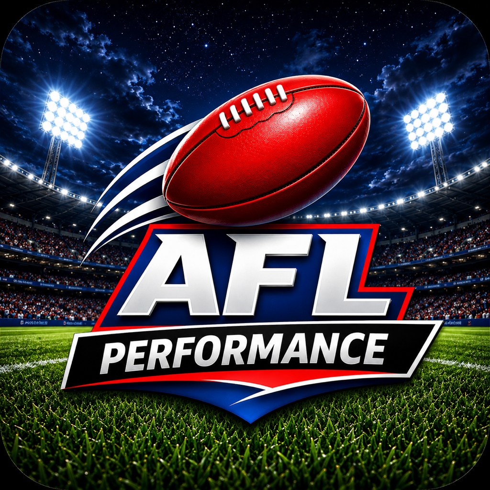

Available now
AFL Performance Analytics
The Spotzlabs AFL app helps fantasy football, SuperCoach and gaming users make sharper decisions with player comparison, AFL player trends, team dashboards, performance insights and curated AFL news.
- AFL player comparison
- Player and team trend dashboards
- Fantasy football and SuperCoach decision support
- Curated AFL news and performance signals
- Decision-ready insights for gaming and analysis